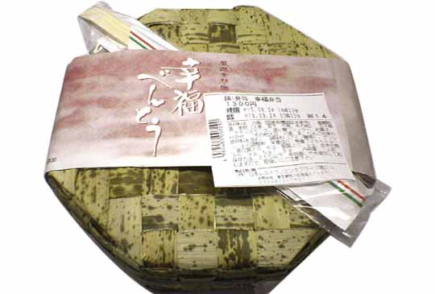
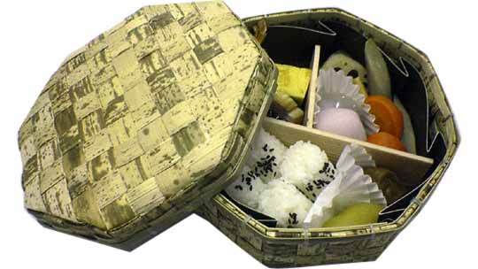
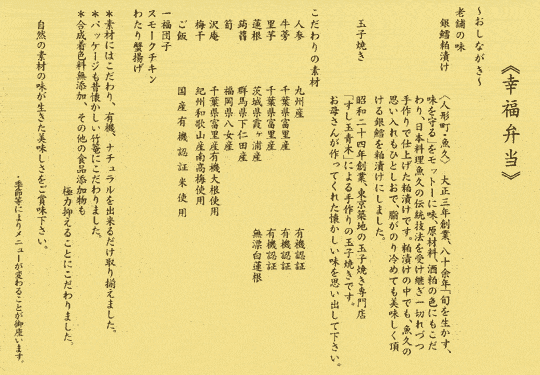
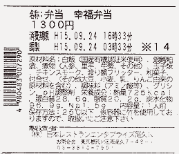

リーズナブルとはいえ、１３００円だから、駅弁にしてはやや高めではあるけど…

結構便利。使い勝手は色々あってよろしい。
ぱっと見お弁当は無骨な感じだけど、シンプルなおかずは懲りすぎたおかずより嬉しいかも。
「大人の休日」は懲りすぎ…

まずはご飯。俵型になっているから冷たいご飯も食べやすい。
「大人の休日」は食べにくかったので、コレは結構ポイント高し。
なぜか肉類のおかずが無い。。。けどヘルシー志向な人には嬉しいのではないのかしらん。
お魚美味しい。煮物はフツー。
けどなによりも嬉しいのが立派な梅干し〜！あとミニ大福。
結構見た目よりボリュームありました。「大人の休日」と同じような購入者をターゲットにしてるのだろうけど、「幸福弁当」のほうがオススメです。


